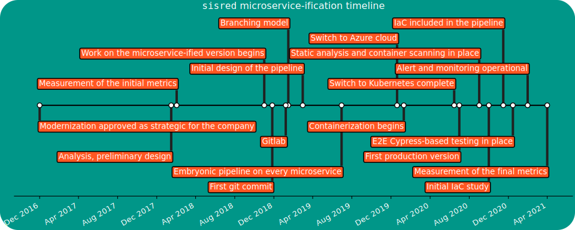

Software Engineering
(for Intelligent Distributed Systems)
Module 3: DevOps
Introduction to agile and DevOps
Development
- Analysis of a domain
- Design of a solution
- Implementation
- Testing
Operations
- IT infrastructure
- Deployment
- Maintenance
Silo mentality

No silos

DevOps culture
-
Increased collaboration
- Dev and Ops should exchange information and work together
-
Shared responsibility
- A team is responsible for the (sub) product for its whole lifetime
- No handing over projects from devs to ops
-
Autonomous teams
- Lightweight decision making process
-
Focus on the process, not just the product
- Promote small, incremental changes
- Automate as much as possible
- Leverage the right tool for the job at hand
Why bother?
-
Risk management
- Reduce the probability of failure
- Detect defects before hitting the market
- Quickly react to problems
-
Resource exploitation
- Use human resources for human-y work
- Reduce time to market
- Embrace innovation
- Exploit emerging technologies
DevOps
- Principles
- Practices
- Tools
Principles inspire practices
Practices require tools
DevOps principles
(not exhaustive)
- Collaboration
- Reproducibility
- Automation
- Incrementality
- Robustness
DevOps practices
- Workflow organization
- Build automation
- Self-testing code
- Code quality control
- Continuous Integration
- Continuous Delivery
- Continuous Deployment
- Continuous Monitoring
A real-world test case
We applied DevOps (and microservice-ification) to an existing software project, measuring some metrics before and after the operation.
- The detailed experience report has been presented at the 37th International Conference on Software Maintenance and Evolution (ICSME 2021)
The target
Maggioli S.p.A
- Multinational, based in Italy
- ~2000 collaborators at the time of writing
- An internal IT/Operations team
- Our target team was composed of five people
sisred (before intervention)
- Client-server stand-alone application
- Delphi front-end, Microsoft SQL Server backend
- Editors (paid by Maggioli) are experts in law entering information on the client
- The information is the exposed into a (paid access) portal with up-to-date legal information
Previous architecture

| Metric | Prev. | Now | Change |
|---|---|---|---|
| Release frequency ($\frac{releases}{day}$) | 0.071 | ||
| Commit to release time (hours) | 8 to 24 | ||
| Commits per day ($\frac{commits}{day}$) | 2 | ||
| MTTR (hours) | 36 | ||
| Prod. env. setup (working hours) | 16 | ||
| Dev. env. setup (minutes) | 120 | ||
| Nightly downtime ($\frac{minutes}{night}$) | 30 | ||
| Support ticket frequency ($\frac{tickets}{month}$) | 40 | ||
| Issue resolution time (days) | 4 |
Microservice-ified architecture

CI Pipeline

| Metric | Prev. | Now | Change |
|---|---|---|---|
| Release frequency ($\frac{releases}{day}$) | 0.071 | 2.7 | +3700% |
| Commit to release time (hours) | 8 to 24 | ||
| Commits per day ($\frac{commits}{day}$) | 2 | ||
| MTTR (hours) | 36 | ||
| Prod. env. setup (working hours) | 16 | ||
| Dev. env. setup (minutes) | 120 | ||
| Nightly downtime ($\frac{minutes}{night}$) | 30 | ||
| Support ticket frequency ($\frac{tickets}{month}$) | 40 | ||
| Issue resolution time (days) | 4 |
| Metric | Prev. | Now | Change |
|---|---|---|---|
| Release frequency ($\frac{releases}{day}$) | 0.071 | 2.7 | +3700% |
| Commit to release time (hours) | 8 to 24 | 0.19 | ~ -98.5% |
| Commits per day ($\frac{commits}{day}$) | 2 | ||
| MTTR (hours) | 36 | ||
| Prod. env. setup (working hours) | 16 | ||
| Dev. env. setup (minutes) | 120 | ||
| Nightly downtime ($\frac{minutes}{night}$) | 30 | ||
| Support ticket frequency ($\frac{tickets}{month}$) | 40 | ||
| Issue resolution time (days) | 4 |
| Metric | Prev. | Now | Change |
|---|---|---|---|
| Release frequency ($\frac{releases}{day}$) | 0.071 | 2.7 | +3700% |
| Commit to release time (hours) | 8 to 24 | 0.19 | ~ -98.5% |
| Commits per day ($\frac{commits}{day}$) | 2 | 7.1 | +255% |
| MTTR (hours) | 36 | ||
| Prod. env. setup (working hours) | 16 | ||
| Dev. env. setup (minutes) | 120 | ||
| Nightly downtime ($\frac{minutes}{night}$) | 30 | ||
| Support ticket frequency ($\frac{tickets}{month}$) | 40 | ||
| Issue resolution time (days) | 4 |
| Metric | Prev. | Now | Change |
|---|---|---|---|
| Release frequency ($\frac{releases}{day}$) | 0.071 | 2.7 | +3700% |
| Commit to release time (hours) | 8 to 24 | 0.19 | ~ -98.5% |
| Commits per day ($\frac{commits}{day}$) | 2 | 7.1 | +255% |
| MTTR (hours) | 36 | 0.5 | -98.6% |
| Prod. env. setup (working hours) | 16 | ||
| Dev. env. setup (minutes) | 120 | ||
| Nightly downtime ($\frac{minutes}{night}$) | 30 | ||
| Support ticket frequency ($\frac{tickets}{month}$) | 40 | ||
| Issue resolution time (days) | 4 |
| Metric | Prev. | Now | Change |
|---|---|---|---|
| Release frequency ($\frac{releases}{day}$) | 0.071 | 2.7 | +3700% |
| Commit to release time (hours) | 8 to 24 | 0.19 | ~ -98.5% |
| Commits per day ($\frac{commits}{day}$) | 2 | 7.1 | +255% |
| MTTR (hours) | 36 | 0.5 | -98.6% |
| Prod. env. setup (working hours) | 16 | 0.35 | -97.8% |
| Dev. env. setup (minutes) | 120 | ||
| Nightly downtime ($\frac{minutes}{night}$) | 30 | ||
| Support ticket frequency ($\frac{tickets}{month}$) | 40 | ||
| Issue resolution time (days) | 4 |
| Metric | Prev. | Now | Change |
|---|---|---|---|
| Release frequency ($\frac{releases}{day}$) | 0.071 | 2.7 | +3700% |
| Commit to release time (hours) | 8 to 24 | 0.19 | ~ -98.5% |
| Commits per day ($\frac{commits}{day}$) | 2 | 7.1 | +255% |
| MTTR (hours) | 36 | 0.5 | -98.6% |
| Prod. env. setup (working hours) | 16 | 0.35 | -97.8% |
| Dev. env. setup (minutes) | 120 | 9 | -92.5% |
| Nightly downtime ($\frac{minutes}{night}$) | 30 | ||
| Support ticket frequency ($\frac{tickets}{month}$) | 40 | ||
| Issue resolution time (days) | 4 |
| Metric | Prev. | Now | Change |
|---|---|---|---|
| Release frequency ($\frac{releases}{day}$) | 0.071 | 2.7 | +3700% |
| Commit to release time (hours) | 8 to 24 | 0.19 | ~ -98.5% |
| Commits per day ($\frac{commits}{day}$) | 2 | 7.1 | +255% |
| MTTR (hours) | 36 | 0.5 | -98.6% |
| Prod. env. setup (working hours) | 16 | 0.35 | -97.8% |
| Dev. env. setup (minutes) | 120 | 9 | -92.5% |
| Nightly downtime ($\frac{minutes}{night}$) | 30 | 0 | -100% |
| Support ticket frequency ($\frac{tickets}{month}$) | 40 | ||
| Issue resolution time (days) | 4 |
| Metric | Prev. | Now | Change |
|---|---|---|---|
| Release frequency ($\frac{releases}{day}$) | 0.071 | 2.7 | +3700% |
| Commit to release time (hours) | 8 to 24 | 0.19 | ~ -98.5% |
| Commits per day ($\frac{commits}{day}$) | 2 | 7.1 | +255% |
| MTTR (hours) | 36 | 0.5 | -98.6% |
| Prod. env. setup (working hours) | 16 | 0.35 | -97.8% |
| Dev. env. setup (minutes) | 120 | 9 | -92.5% |
| Nightly downtime ($\frac{minutes}{night}$) | 30 | 0 | -100% |
| Support ticket frequency ($\frac{tickets}{month}$) | 40 | 19 | -52.5% |
| Issue resolution time (days) | 4 |
| Metric | Prev. | Now | Change |
|---|---|---|---|
| Release frequency ($\frac{releases}{day}$) | 0.071 | 2.7 | +3700% |
| Commit to release time (hours) | 8 to 24 | 0.19 | ~ -98.5% |
| Commits per day ($\frac{commits}{day}$) | 2 | 7.1 | +255% |
| MTTR (hours) | 36 | 0.5 | -98.6% |
| Prod. env. setup (working hours) | 16 | 0.35 | -97.8% |
| Dev. env. setup (minutes) | 120 | 9 | -92.5% |
| Nightly downtime ($\frac{minutes}{night}$) | 30 | 0 | -100% |
| Support ticket frequency ($\frac{tickets}{month}$) | 40 | 19 | -52.5% |
| Issue resolution time (days) | 4 | 3 | -25% |
Benefits
- Much less maintenance in the traditional meaning: “Time spent to keep the system in nominal conditions”
- No more issues with Windows updates
- No more downtimes related to internal network / electricity / public infrastructure maintenance
- Improved security
- No more critical failures caused by testing stored procedures directly in production my mistake
- Much more maintenance in terms of software evolution
- Application (or verification of automatic application) of updates
- Security audits
- Maintenance and update of the pipeline
Lessons learned
- The teams must be autonomous
- Practices must be tailored to the team
- Time-consuming, repetitive, and cumbersome procedures must be automated
- Obsolete practices must be removed
- Communication is key, awareness must be shed across the team of the expected benefits
Timeline

Agile software development
Manifesto
We are uncovering better ways of developing software by doing it and helping others do it. Through this work we have come to value:
- Individuals and interactions over processes and tools
- Working software over comprehensive documentation
- Customer collaboration over contract negotiation
- Responding to change over following a plan
That is, while there is value in the items on the right, we value the items on the left more.
Agile Principles I
(emphasis mine) (comments mine)
-
Our highest priority is to satisfy the customer through early and continuous delivery of valuable software.
-
Welcome changing requirements, even late in development. Agile processes harness change for the customer’s competitive advantage. (Not an excuse for not collecting requirements upfront)
-
Deliver working software frequently, from a couple of weeks to a couple of months, with a preference to the shorter timescale. (Daily, hourly)
-
Business people and developers must work together daily throughout the project. (And understand each other!)
-
Build projects around motivated individuals. Give them the environment and support they need, and trust them to get the job done. (Teams must be independent)
-
The most efficient and effective method of conveying information to and within a development team is face-to-face conversation. (Yes, it is pre-covid stuff)
Agile Principles II
(emphasis mine) (comments mine)
-
Working software is the primary measure of progress. (But if used as the only measure progress, progress will halt soon)
-
Agile processes promote sustainable development. The sponsors, developers, and users should be able to maintain a constant pace indefinitely. (Bureaucracy and maintenance task should not pile up)
-
Continuous attention to technical excellence and good design enhances agility. (First, do it well)
-
Simplicity–the art of maximizing the amount of work not done–is essential. (Also known as KISS)
-
The best architectures, requirements, and designs emerge from self-organizing teams.
-
At regular intervals, the team reflects on how to become more effective, then tunes and adjusts its behavior accordingly. (Or, maybe, continuously…)
Practices vs. Frameworks
Principles get reified into practices
Practices get often interpreted and formalized into frameworks
Framework are actionable, but formalization may introduce assumptions about projects and teams that do not hold always!
Agile principles and practices get often captured into these well-known frameworks, with slightly different focuses and goals:
- Scrum
- focus on team structure, roles, responsibilities, procedures
- Kanban
- focus on tasks, streamlining, bottleneck mitigation
- XP (Extreme Programming)
- focuses on release frequency
- Feature Driven Development
- focuses on the client requests and satisfaction
- Crystal
- focuses on self-management of teams
- DSDM (Dynamic Systems Development Method)
- focuses on time and budget constraints
Scrum
Seminal paper from 1986 by Hirotaka Takeuchi and Ikujiro Nonaka:
Then refined to the current framework. The name is from Rugby’s “scrummage”

Scrum key ideas
- Requirements are volatile
- There will be unpredictability along the road
- Accept that the problem may not be fully understood upfront, and focus on quick response to unexpected changes
Scrum workflow
- The development is divided in Sprints
- A Sprint is timeboxed: the length is agreed in advance
- The most commonly adopted length is two weeks
- A Sprint must end with a deliverable advancement
- Each sprint is macro-structured as follows:
- Planning: define the activities of the sprint
- Daily scrums (aka “stand-up meetings”): daily updates on the state of work
- Sprint review: at the of the sprint, present the work to the stakeholders
- At regular intervals a Sprint retrospective is held
- Reason on the past sprints with the goal of continuous improvement
Scrum roles
Our approach
- Scrum as an example of agile framework
- How it works
- I’ll try to be as objective as possible
**Discussion
know your team
know your project
beware of the marketing
post agile?